Chapter 1
Introduction to Reinforcement Learning & Bandit Algorithms
History · Core concepts · Bandits
← → navigate slides · ↓ resources
← → navigate slides · ↓ resources
Richard Bellman
Introduced Dynamic Programming — the mathematical foundation for solving sequential decision problems optimally.
← → navigate slides · ↓ resources
Richard Sutton
Formalized Temporal Difference learning and co-authored the definitive textbook on Reinforcement Learning.
← → navigate slides · ↓ resources
Deep Q-Network — Nature 2015
DeepMind demonstrated that a single agent could master Atari games from raw pixels using deep neural networks.
← → navigate slides · ↓ resources
AlphaGo — Nature 2016
DeepMind's AlphaGo defeated the world champion at Go, a game long considered intractable for computers.
← → navigate slides · ↓ resources
Core Concepts
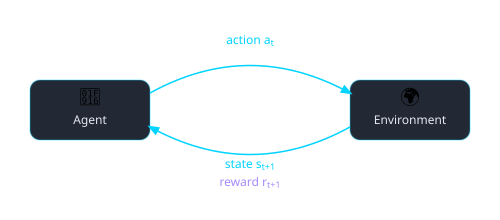
The agent–environment loop
The fundamental trade-off
← → navigate slides · ↓ resources
A Brief History of Bandits
← → navigate slides · ↓ resources
Multi-Armed Bandit
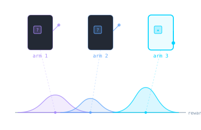
Notation
$K$ arms · $\mathcal{A} = \{1,\ldots,K\}$
$\mu_a = \mathbb{E}[R_t \mid A_t = a]$ · $\mu^* = \max_{a \in \mathcal{A}} \mu_a$
$h_t = (a_1,r_1,\ldots,a_{t-1},r_{t-1}) \in \mathcal{H}_t$
$\pi(\cdot \mid h_t) \in \Delta(\mathcal{A})$
Objective
$$\pi^* = \arg\max_{\pi}\; \underset{\substack{A_t \sim \pi(\cdot \mid H_t) \\ R_t \sim \nu_{A_t}}}{\mathbb{E}}\!\left[\sum_{t=1}^{T} R_t\right]$$
Regret
$$\text{Reg}_T = T\mu^* - \underset{\substack{A_t \sim \pi(\cdot \mid H_t) \\ R_t \sim \nu_{A_t}}}{\mathbb{E}}\!\left[\sum_{t=1}^{T} R_t\right]$$
← → navigate slides · ↓ resources
ε-Greedy
$A_t$
$\text{Uniform}(\mathcal{A})$
explore
$\arg\max_{a}\,\hat{\mu}_a$
exploit
Pseudocode
Init: $\hat{\mu}_a \leftarrow 0,\; N_a \leftarrow 0 \quad \forall\, a \in \mathcal{A}$
For $t = 1, \ldots, T\,$:
$B_t \sim \text{Bernoulli}(\varepsilon)$
$A_t \sim \begin{cases} \text{Uniform}(\mathcal{A}) & \text{if } B_t = 1 \\ \delta_{\arg\max_{a \in \mathcal{A}}\hat{\mu}_a} & \text{if } B_t = 0 \end{cases}$
$R_t \sim \nu_{A_t}$
$N_{A_t} \leftarrow N_{A_t} + 1$
$\hat{\mu}_{A_t} \leftarrow \hat{\mu}_{A_t} + \tfrac{1}{N_{A_t}}\!\left(R_t - \hat{\mu}_{A_t}\right)$ // incremental update
Regret bound
$$\text{Reg}_T = O\!\left((KT)^{2/3}(\ln T)^{1/3}\right)$$
← → navigate slides · ↓ resources
Upper Confidence Bound
Pseudocode
Init: $\hat{\mu}_a \leftarrow 0,\; N_a \leftarrow 0 \quad \forall\, a \in \mathcal{A}$
For $t = 1, \ldots, T\,$:
$A_t = \arg\max_{a \in \mathcal{A}} \!\left(\hat{\mu}_a + \sqrt{\dfrac{2\ln t}{N_a}}\right)$ // optimism
$R_t \sim \nu_{A_t}$
$N_{A_t} \leftarrow N_{A_t} + 1$
$\hat{\mu}_{A_t} \leftarrow \hat{\mu}_{A_t} + \tfrac{1}{N_{A_t}}\!\left(R_t - \hat{\mu}_{A_t}\right)$
Regret bound
$$\text{Reg}_T = O\!\left(\sqrt{KT\ln T}\right)$$
← → navigate slides · ↓ resources
Thompson Sampling
Pseudocode
Init: $\alpha_a \leftarrow 1,\; \beta_a \leftarrow 1 \quad \forall\, a \in \mathcal{A}$
For $t = 1, \ldots, T\,$:
$\theta_a \sim \text{Beta}(\alpha_a, \beta_a) \quad \forall\, a \in \mathcal{A}$
$A_t = \arg\max_{a \in \mathcal{A}}\, \theta_a$
$R_t \sim \nu_{A_t}$
$\alpha_{A_t} \leftarrow \alpha_{A_t} + R_t$
$\beta_{A_t} \leftarrow \beta_{A_t} + (1 - R_t)$
Regret bound
$$\text{Reg}_T = O\!\left(\sqrt{KT\ln T}\right)$$
← → navigate slides · ↓ resources
Notebook 01 — Bandits
Implement ε-Greedy, compare all three algorithms, and analyse HP sensitivity.
← → navigate slides · ↓ resources
Stationary vs Contextual Bandits
Without context
Best fixed arm:
$a^* = \arg\max_{a}\, \mu_a$
Value:
$V^* = \mu_{a^*} = 0.6$
With context
Best policy:
$\pi^*(x) = \arg\max_{a}\, \mu_{a,x}$
Value:
$V^*_\mathcal{X} = \underset{X \sim \mathcal{D}}{\mathbb{E}}\!\left[\max_a \mu_{a,X}\right] = 0.65$
$V^*_\mathcal{X} > V^*$
← → navigate
Contextual Bandits
Context
$X_t \sim \mathcal{D}$ — observed before acting
History
$H_t = (X_1, A_1, R_1,\, \ldots,\, X_{t-1}, A_{t-1}, R_{t-1})$
Policy
$A_t \sim \pi(\cdot \mid H_t, X_t)$
Reward
$R_t \sim \nu_{A_t,\, X_t}$
Regret
$\displaystyle\mathrm{Reg}_T = \underset{X_t \sim \mathcal{D}}{\mathbb{E}}\!\left[\sum_{t=1}^{T} \max_a \mu_{a,X_t}\right] - \underset{\substack{X_t \sim \mathcal{D} \\ A_t \sim \pi}}{\mathbb{E}}\!\left[\sum_{t=1}^{T} R_t\right]$
← → navigate
Summary — Chapter 1
①
Exploration vs exploitation
The fundamental question in sequential decision-making.
②
Smarter exploration, lower regret
From random to greedy, from greedy to principled (UCB, Thompson Sampling).
③
Context is power
Observing the right context before acting can greatly improve what's achievable.
← → navigate slides · ↓ resources
Chapter 2
Markov Decision Processes & Dynamic Programming
Bellman equation · Policy iteration · Value iteration · Model-free · Approximated DP
← → navigate slides · ↓ resources
Markov Decision Processes
$\mathcal{M} = (\mathcal{S},\, \mathcal{A},\, P,\, r,\, \gamma,\, \delta_0)$
State space: $\mathcal{S}$
Action space: $\mathcal{A}$
Transition kernel:
$P : \mathcal{S} \times \mathcal{A} \to \Delta(\mathcal{S})$
Reward function:
$r : \mathcal{S} \to \mathbb{R}$
Discount: $\gamma \in [0,1)$
Initial distribution: $\delta_0 \in \Delta(\mathcal{S})$
Policy
$$\pi : \mathcal{S} \to \Delta(\mathcal{A})$$
Trajectory distribution
$\tau = (S_0, A_0, R_0, S_1, A_1, R_1, \ldots)$
$$\mathbb{P}_\pi(\tau) = \delta_0(S_0)\prod_{t \geq 0} \pi(A_t \mid S_t)\, P(S_{t+1} \mid S_t, A_t)$$
Objective
$$\pi^* = \arg\max_{\pi}\; \mathbb{E}_{\tau \sim \mathbb{P}_\pi}\!\left[\sum_{t=0}^{\infty} \gamma^t R_t\right]$$
← → navigate slides · ↓ resources
A Practical Case: Grid World
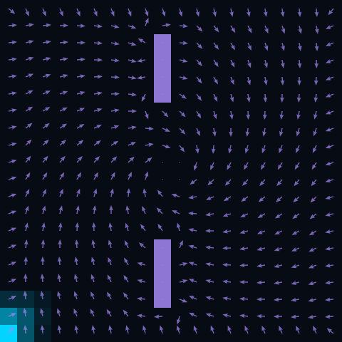
Instantaneous distribution
$\mu_t(s)=\mathbb{P}(S_t = s)$ — marginal distribution at time $t$
→
Mean drift
$\mathbb{E}[\Delta S_t \mid S_t = s]$ — mean drift under $P$
Wall cells
$P(s' \mid s) = 0$ if $s'$ is a wall
Initial distribution
$S_0 \sim \delta_{s_0}$, $s_0 = (19,\,0)$
← → navigate slides · ↓ resources
Discrete-Time Markov Chain
Markov Property
$$\mathbb{P}(S_{t+1} \mid S_0,\ldots,S_t) = P(\cdot \mid S_t)$$
Instantaneous Distribution
$\mu_t \in \Delta(\mathcal{S})$ · $[\mu_t]_s = \mathbb{P}(S_t = s)$
$$\mu_{t+1} = \mu_t\, P$$
Occupation Measure
$$\rho = \lim_{T\to\infty} \frac{1}{T}\sum_{t=0}^{T-1} \mu_t \;\in\; \Delta(\mathcal{S})$$
Stationary Distribution
$$\mu_\infty = \lim_{t\to\infty} \delta_{s_0} P^t \;\in\; \Delta(\mathcal{S})$$
← → navigate slides · ↓ resources
Controlled Markov Chain
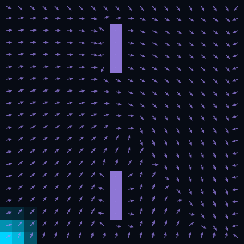
Action
$A_t \sim \pi(\cdot \mid S_t)$ · $A_t \in \mathcal{A}$
Controlled Kernel
$P : \mathcal{S} \times \mathcal{A} \to \Delta(\mathcal{S})$
Induced Kernel
$$P^\pi(s' \mid s) = \sum_{a \in \mathcal{A}} \pi(a \mid s)\cdot P(s' \mid s, a)$$
$$\mu_{t+1}^\pi = \mu_t^\pi\, P^\pi$$
← → navigate slides · ↓ resources
Notebook 02 — Controlled Markov Chains
Simulate policies on a grid, observe stationary distributions, mixing times, and discounted occupation measures.
← → navigate slides · ↓ resources
Markov Decision Process

Action
$A_t \sim \pi(\cdot \mid S_t)$ · $A_t \in \mathcal{A}$
Controlled Kernel
$P : \mathcal{S} \times \mathcal{A} \to \Delta(\mathcal{S})$
Reward
generic $r : \mathcal{S} \to \mathbb{R}$
tabular $R \in \mathbb{R}^{|\mathcal{S}|}, \; [R]_s = r(s)$
← → navigate slides · ↓ resources
Policy Evaluation (Model-Based)
Objective
$$\pi^* = \arg\max_{\pi}\; J(\pi)$$
Performance
$$J(\pi) = \mathbb{E}_{\tau \sim \mathbb{P}_\pi}\!\left[\sum_{t=0}^{\infty} \gamma^t R_t\right] = \delta_0^\top \sum_{t=0}^{\infty} \gamma^t (P^\pi)^t R$$
Tabular
$$V^\pi = \sum_{t=0}^{\infty} \gamma^t (P^\pi)^t R$$
Function
$$v^\pi(s) = \underset{\substack{A_t \sim \pi(\cdot \mid S_t) \\ S_{t+1} \sim P(\cdot \mid S_t, A_t)}}{\mathbb{E}}\!\left[\sum_{t=0}^{\infty} \gamma^t r(S_t) \;\middle|\; S_0 = s\right]$$
← → navigate slides · ↓ resources
Bellman Equation
Tabular
$$V^\pi = R + \gamma P^\pi V^\pi$$
Function
$$v^\pi(s) = r(s) + \gamma \underset{\substack{A \sim \pi(\cdot \mid s) \\ S' \sim P(\cdot \mid s, A)}}{\mathbb{E}}\!\left[v^\pi(S')\right]$$
← → navigate slides · ↓ resources
Bellman Operator
Operator
$\mathcal{T}^\pi : \mathbb{R}^{|\mathcal{S}|} \to \mathbb{R}^{|\mathcal{S}|}$
$$(\mathcal{T}^\pi v)(s) = r(s) + \gamma \underset{\substack{A \sim \pi(\cdot \mid s) \\ S' \sim P(\cdot \mid s, A)}}{\mathbb{E}}\!\left[v(S')\right]$$
fixed point $\mathcal{T}^\pi V^\pi = V^\pi$
Contraction
$$\|\mathcal{T}^\pi f - \mathcal{T}^\pi g\|_\infty \leq \gamma\,\|f - g\|_\infty$$
← → navigate slides · ↓ resources
Policy Evaluation Algorithm (Model-Based)
input $P^\pi \in \mathbb{R}^{|\mathcal{S}|\times|\mathcal{S}|},\; R \in \mathbb{R}^{|\mathcal{S}|},\; \gamma,\; \varepsilon$
init $V_0 \in \mathbb{R}^{|\mathcal{S}|}$ // arbitrary
repeat
$V_{k+1} \leftarrow R + \gamma\, P^\pi V_k$
until $\|V_{k+1} - V_k\|_\infty < \varepsilon$
return $V_k \approx V^\pi$
$\pi$ = Spiral CCW
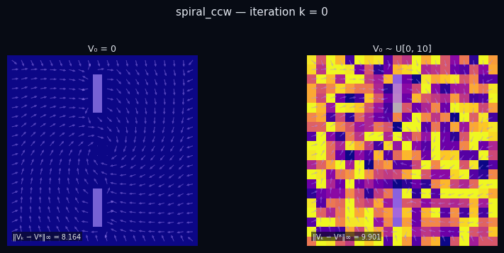
$\pi$ = Rightward
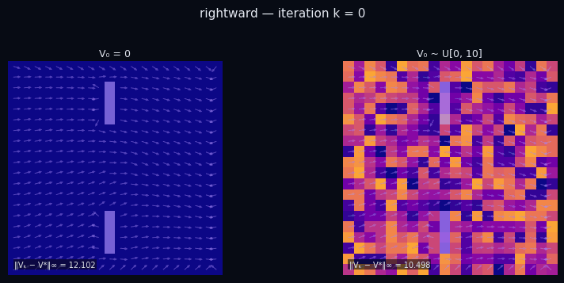
← → navigate slides · ↓ resources
Policy Improvement (Model-Based)
Greedy Policy
$$\pi'(s) = \arg\max_a \underset{S' \sim P(\cdot \mid s,a)}{\mathbb{E}}\!\left[v^\pi(S')\right]$$
Requires
$P(\cdot \mid s, a)$
transition model
Improvement Theorem
$$v^{\pi'}(s) \geq v^{\pi}(s) \quad \forall s \in \mathcal{S}$$
Optimality
$v^{\pi'} = v^\pi \Rightarrow \pi = \pi^*$
← → navigate slides · ↓ resources
Policy Improvement (Model-Based)
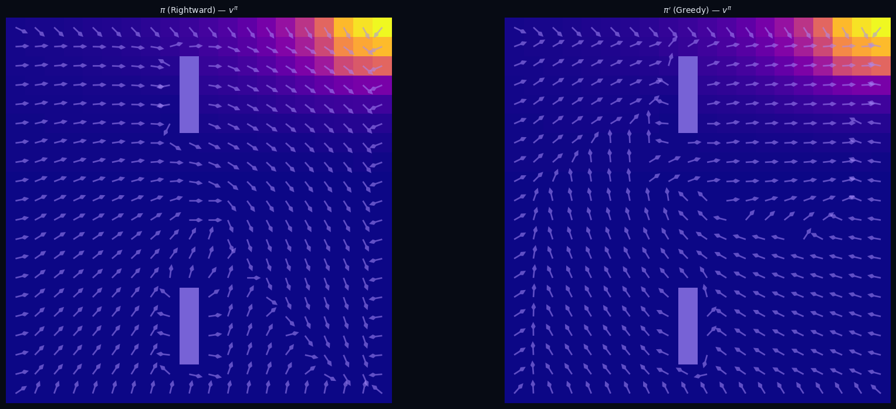
$\pi$ — Rightward · heatmap $v^\pi$
$\pi'$ — Greedy w.r.t. $v^\pi$
← → navigate slides · ↓ resources
Policy Iteration (Model-Based)
input $P \in \mathbb{R}^{|\mathcal{S}|\times|\mathcal{S}|\times|\mathcal{A}|},\; R \in \mathbb{R}^{|\mathcal{S}|},\; \gamma,\; \varepsilon$
init $\pi_0$ arbitrary, $V_0 \in \mathbb{R}^{|\mathcal{S}|}$
repeat
// Policy Evaluation
repeat
$V_{k+1} \leftarrow R + \gamma\, P^{\pi_i} V_k$
until $\|V_{k+1} - V_k\|_\infty < \varepsilon$
// Policy Improvement
$\pi_{i+1} \leftarrow \arg\max_{a}\; \underset{S' \sim P(\cdot \mid s, a)}{\mathbb{E}}\!\left[V_k(S')\right]$
until $\pi_{i+1} = \pi_i$
return $\pi_i = \pi^*,\quad V_k = V^*$
Convergence
finite number of iterations
at most $|\mathcal{A}|^{|\mathcal{S}|}$ policies
Optimality
$\pi' = \pi \;\Rightarrow\; v^\pi = v^*$
← → navigate slides · ↓ resources
Policy Iteration (Model-Based)
Eval $\pi_0$
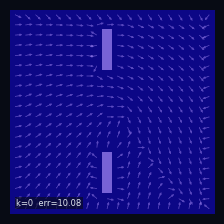
Eval $\pi_1$
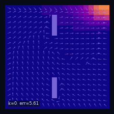
Eval $\pi^*$
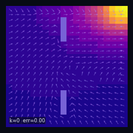
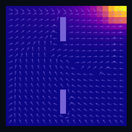
$\pi_1$ greedy
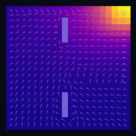
$\pi_2$ greedy
← → navigate slides · ↓ resources
Bellman Optimality Operator
$$(\mathcal{T}^* V)(s) \;=\; \max_{a \in \mathcal{A}}\; \underset{S' \sim P(\cdot \mid s,\, a)}{\mathbb{E}}\!\left[r(s) + \gamma\, V(S')\right]$$
Contraction
$\|\mathcal{T}^* V - \mathcal{T}^* W\|_\infty \leq \gamma\, \|V - W\|_\infty$
Fixed Point
$V^* = \mathcal{T}^* V^*$
Bellman optimality equation
← → navigate slides · ↓ resources
Value Iteration (Model-Based)
input $P \in \mathbb{R}^{|\mathcal{S}|\times|\mathcal{S}|\times|\mathcal{A}|},\; R \in \mathbb{R}^{|\mathcal{S}|},\; \gamma,\; \varepsilon$
init $V_0 \in \mathbb{R}^{|\mathcal{S}|}$ arbitrary
repeat
$V_{k+1} \leftarrow \mathcal{T}^* V_k$
until $\|V_{k+1} - V_k\|_\infty < \varepsilon$
return $V^* \approx V_k$
$\displaystyle\pi^*(s) = \arg\max_{a \in \mathcal{A}}\; \underset{S' \sim P(\cdot \mid s,\, a)}{\mathbb{E}}\!\left[r(s) + \gamma\, V^*(S')\right]$
Convergence
$\|V_k - V^*\|_\infty \leq \dfrac{\gamma^k}{1-\gamma}\,\|V_1 - V_0\|_\infty$
vs Policy Iteration
no inner eval loop
eval + improve fused into $\mathcal{T}^*$
← → navigate slides · ↓ resources
PI vs VI
Policy Iteration
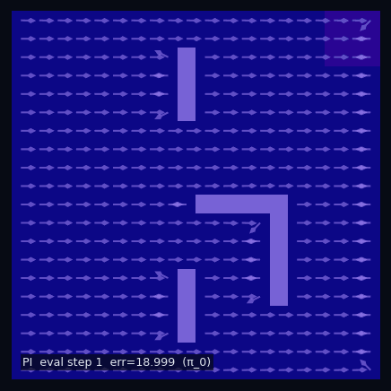
Value Iteration
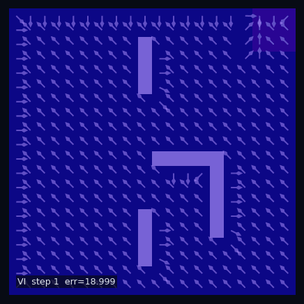
← → navigate slides · ↓ resources
Notebook 03 — Dynamic Programming
Evaluate fixed policies on a grid, visualise the effect of γ, then find the optimal policy via Policy Iteration and Value Iteration.
← → navigate slides · ↓ resources
Temporal Difference Learning (Model-Free)
TD Error
$$\delta_t = r(S_t,A_t) + \gamma\, v(S_{t+1}) - v(S_t)$$
Update
$$v(S_t) \leftarrow v(S_t) + \alpha\,\delta_t$$
bootstrap — uses estimate $v(S_{t+1})$, not true value
Gradient descent view
$v_{k+1} = \displaystyle\arg\min_{v}\;\tfrac{1}{2}\!\left(v(s_t) - \mathcal{T}^\pi v_k(s_t)\right)^2$
$\xRightarrow{\;\nabla_v\;}$
$\nabla_v = \underbrace{v_k(s_t) - \mathcal{T}^\pi v_k(s_t)}_{-\delta_t}$
$\xRightarrow{\;-\alpha\nabla_v\;}$
$v_{k+1}(s_t) = v_k(s_t) + \alpha\,\delta_t$
← → navigate slides · ↓ resources
TD(0) — Policy Evaluation V-function
Pseudocode
Input: $\mathcal{D} = \{(s_t,\, a_t,\, r_t,\, s'_t)\}$ with $s'_t \sim P^\pi(\cdot \mid s_t)$
← on-policy
Init: $v(s) \leftarrow 0 \quad \forall\, s \in \mathcal{S}$
For each $(s_t,\, a_t,\, r_t,\, s'_t) \in \mathcal{D}$:
$\delta_t = r_t + \gamma\,v(s'_t) - v(s_t)$
$v(s_t) \leftarrow v(s_t) + \alpha\,\delta_t$
← → navigate slides · ↓ resources
Action-Value Function Q-Function
Definition
$$q^\pi(s,a) = r(s,a) + \gamma \underset{\substack{S' \sim P(\cdot \mid s,a) \\ A' \sim \pi(\cdot \mid S')}}{\mathbb{E}}\!\left[q^\pi(S',A')\right]$$
fixed point $\mathcal{T}^\pi_Q\, q^\pi = q^\pi$
Contraction
$$\|\mathcal{T}^\pi_Q f - \mathcal{T}^\pi_Q g\|_\infty \leq \gamma\,\|f - g\|_\infty$$
← → navigate slides · ↓ resources
TD(0) — Policy Evaluation Q-function (SARSA)
Pseudocode
Input: $\mathcal{D} = \{(s_t,\, a_t,\, r_t,\, s'_t,\, a'_t)\}$ with $a'_t \sim \pi(\cdot \mid s'_t)$
← on-policy
Init: $q(s, a) \leftarrow 0 \quad \forall\, s \in \mathcal{S},\, a \in \mathcal{A}$
For each $(s_t,\, a_t,\, r_t,\, s'_t,\, a'_t) \in \mathcal{D}$:
$\delta_t = r_t + \gamma\,q(s'_t, a'_t) - q(s_t, a_t)$
$q(s_t, a_t) \leftarrow q(s_t, a_t) + \alpha\,\delta_t$
$\hat{v}(s) = \textstyle\sum_a \pi(a \mid s)\, q(s, a)$
← → navigate slides · ↓ resources
V-function vs Q-function
Greedy policy
$$\pi'(s) = \arg\max_a \Bigl[ r(s,a) + \gamma \sum_{s'} P(s'\!\mid\! s,a)\, v(s') \Bigr]$$
$$\pi'(s) = \arg\max_a\; q(s,a)$$
TD target
$r(s) + \gamma\, v(S')$
requires $S' \sim P^{\pi}(\cdot \mid s)$ — must follow $\pi$
$r(s,a) + \gamma\, q(S',A')$
$(s,a,r,S')$ arbitrary · $A' \sim \pi(\cdot \mid S')$
← → navigate slides · ↓ resources
Q-Learning Off-Policy TD(0)
Pseudocode
Input: $\mathcal{D} = \{(s_t,\, a_t,\, r_t,\, s'_t)\}$ with $a_t \sim b(\cdot \mid s_t)$
← any behavior
Init: $q(s, a) \leftarrow 0 \quad \forall\, s,\, a$
For each $(s_t,\, a_t,\, r_t,\, s'_t) \in \mathcal{D}$:
$\delta_t = r_t + \gamma\,\max_{a'} q(s'_t,\, a') - q(s_t, a_t)$
$q(s_t, a_t) \leftarrow q(s_t, a_t) + \alpha\,\delta_t$
$\hat{v}^*(s) = \max_a\, q(s, a) \;\xrightarrow{k\to\infty}\; v^*$
← → navigate slides · ↓ resources
How Far Should We Look? n-step Return
Value function — ideal target
$$v^\pi(s_t) = \underset{\substack{A_i \sim \pi(\cdot \mid S_i) \\ S_{i+1} \sim P(\cdot \mid S_i,\, A_i)}}{\mathbb{E}}\!\!\left[\,\sum_{i=0}^{\infty} \gamma^i\, r(S_{t+i}) \;\Big|\; S_t = s_t\right]$$
We can't observe the infinite sum — we must choose how far to unroll.
TD(0) — truncate at n = 1
$$G_t^{(1)} = r_t + \gamma\, v_k(s_{t+1})$$
n-step — truncate at n
$$G_t^{(n)} = \sum_{i=0}^{n-1}\gamma^i\, r_{t+i} \;+\; \gamma^n\, v_k(s_{t+n})$$
$v_{k+1}(s_t) = v_k(s_t) + \alpha\!\left(G_t^{(n)} - v_k(s_t)\right)$
$n{=}1$ TD(0)
·
$n{\to}\infty$ Monte Carlo
TD(0)
n-step
← → navigate slides · ↓ resources
Choosing the Horizon n-step Return
● sampled path
- - other trajectories
■ bootstrap vₖ
small n → more bias
large n → more variance
← → navigate slides · ↓ resources
The λ-Return TD(λ)
geometric mixture of all n-step returns
$$G_t^\lambda \;=\; (1-\lambda)\sum_{n=1}^{\infty}\lambda^{n-1}\, G_t^{(n)}$$
λ = 0
$G_t^0 = r_t + \gamma\,v_k(s_{t+1})$
→ TD(0)
λ = 1
$G_t^1 = {\displaystyle\sum_{i=0}^{\infty}}\gamma^i\,r_{t+i}$
→ Monte Carlo
update
$v_{k+1}(s_t) = v_k(s_t) + \alpha\!\left(G_t^\lambda - v_k(s_t)\right)$
$$G_t^\lambda - v_k(s_t) \;=\; \sum_{n=0}^{\infty}(\gamma\lambda)^n\,\delta_{t+n}$$
$\delta_{t+n} = r_{t+n} + \gamma\,v_k(s_{t+n+1}) - v_k(s_{t+n})$
← → navigate slides · ↓ resources
Forward View TD(λ)
requires future rewards · not online
← → navigate slides · ↓ resources
Backward View Eligibility Traces
TD(λ) — online
$\delta_t = r_t + \gamma\,v(s_{t+1}) - v(s_t)$
$e_t(s_t) \mathrel{+}= 1$
for all $s$:
$v(s) \mathrel{+}= \alpha\,\delta_t\,e_t(s)$
$e_t(s) \mathrel{*}= \gamma\lambda$
forward = backward
same update as $G_t^\lambda$, online
← → navigate slides · ↓ resources
Notebook 03b — Model-Free Methods
TD(0) policy evaluation, effect of α, SARSA vs Q-Learning control,
and TD(λ) eligibility traces — all on the Grid World.
← → navigate slides · ↓ resources
Tabular → Deep RL
tabular — doesn't scale
$Q \in \mathbb{R}^{|\mathcal{S}| \times |\mathcal{A}|} \quad \xrightarrow{\text{large }\mathcal{S}} \quad \text{intractable}$
function approximation
$V_w(s),\quad Q_w(s,a),\quad \pi_\theta(\cdot \mid s)$
same Bellman · same TD target
$w \leftarrow w + \alpha\,\nabla_w\,\mathcal{L}(w)$
← → navigate slides · ↓ resources
DQN Deep Q-Network
loss
$\mathcal{L}(w) = \underset{(S_t,A_t,R_t,S_{t+1}) \sim \mathcal{B}}{\mathbb{E}}\!\left[\Bigl(R_t + \gamma \max_{a'} Q_{w^-}(S_{t+1},a') - Q_w(S_t,A_t)\Bigr)^{\!2}\right]$
update
$w \leftarrow w - \alpha\,\nabla_w\mathcal{L}(w)$ every step
$w^- \leftarrow w$ every $C$ steps
← → navigate slides · ↓ resources
Notebook 03c — Deep RL
DQN · Experience replay · Target network
← → navigate slides · ↓ resources
Summary — Chapter 2
①
The MDP framework
$(\mathcal{S}, \mathcal{A}, P, r, \gamma)$ — the minimal structure needed to define sequential decision-making.
②
Bellman equation
$V^\pi = r + \gamma P^\pi V^\pi$ — a fixed-point that defines value, and whose solution is unique.
③
Dynamic Programming finds $\pi^*$
Policy Iteration and Value Iteration converge to the optimal policy — but require the model $P$.
④
Model-free TD learns from experience
Same fixed point, no model needed. SARSA stays on-policy; Q-Learning goes off-policy directly to $Q^*$.
← → navigate slides · ↓ resources
Chapter 3
Policy Search
Policy Gradient · REINFORCE · PPO · Evolutionary Strategies
← → navigate slides · ↓ resources
Why Policy Gradient?
Value-Based
$$Q^*(s,a) \;\xrightarrow{\;\arg\max_a\;}\; \pi^*(s)$$
Policy Gradient
$$\theta_{k+1} = \theta_k + \alpha\,\nabla_\theta J(\theta_k)$$
← → navigate slides · ↓ resources
Policy Gradient Theorem
Theorem
$$\nabla_\theta J(\theta) = \underset{\substack{S_t \sim \rho^{\pi_\theta}_\gamma \\ A_t \sim \pi_\theta(\cdot \mid S_t)}}{\mathbb{E}}\!\left[\nabla_\theta \log \pi_\theta(A_t \mid S_t)\cdot Q^{\pi_\theta}(S_t, A_t)\right]$$
← → navigate slides · ↓ resources
REINFORCE Monte Carlo Policy Gradient
Init: $\theta$ arbitrary
For $k = 0, 1, 2, \ldots$
── collect trajectory ───────────
$S_0 \sim \delta_0$
For $t = 0, \ldots, T{-}1$:
$A_t \sim \pi_\theta(\cdot \mid S_t)$
sample action
$S_{t+1} \sim P(\cdot \mid S_t, A_t)$
sample next state
── update ───────────────────────
$G_T \leftarrow 0$
For $t = T{-}1, \ldots, 0$:
$G_t \leftarrow r(S_t) + \gamma\, G_{t+1}$
$\theta \leftarrow \theta + \alpha\, G_t\, \nabla_\theta \log \pi_\theta(A_t \mid S_t)$
← → navigate slides · ↓ resources
Variance Reduction Baseline
Log-derivative trick
$$\underset{A_t \sim \pi_\theta(\cdot \mid s)}{\mathbb{E}}\!\left[\nabla_\theta \log \pi_\theta(A_t \mid s)\right] = \nabla_\theta\!\sum_{a \in \mathcal{A}}\pi_\theta(a \mid s) = \mathbf{0}$$
Unbiased for any $b : \mathcal{S} \to \mathbb{R}$
$$\nabla_\theta J(\theta) = \underset{\substack{S_t \sim \rho^{\pi_\theta}_\gamma \\ A_t \sim \pi_\theta(\cdot \mid S_t)}}{\mathbb{E}}\!\left[\nabla_\theta \log \pi_\theta(A_t \mid S_t)\cdot \bigl(G_t - b(S_t)\bigr)\right]$$
← → navigate slides · ↓ resources
Advantage Function
Definition
$$A^{\pi_\theta}(s,a) \;=\; Q^{\pi_\theta}(s,a) - V^{\pi_\theta}(s)$$
REINFORCE with baseline
Optimal $b^*(s) = V^{\pi_\theta}(s)$
$\theta \leftarrow \theta + \alpha\, A^{\pi_\theta}(S_t, A_t)\,\nabla_\theta \log \pi_\theta(A_t \mid S_t)$
← → navigate slides · ↓ resources
Actor-Critic
TD Error — advantage estimate
$$\delta_t \;=\; r(S_t) + \gamma\,V_w(S_{t+1}) - V_w(S_t)$$
Critic update
$w \leftarrow w + \beta\,\delta_t\,\nabla_w V_w(S_t)$
Actor update
$\theta \leftarrow \theta + \alpha\,\delta_t\,\nabla_\theta \log \pi_\theta(A_t \mid S_t)$
← → navigate slides · ↓ resources
TRPO Trust Region Policy Optimization
$\displaystyle r_t(\theta) \;=\; \frac{\pi_\theta(A_t \mid S_t)}{\pi_{\theta_\text{old}}(A_t \mid S_t)}$
objective
$\pi^* = \displaystyle\arg\max_\theta \underset{\substack{S_t \sim d^{\pi_{\theta_\text{old}}} \\ A_t \sim \pi_{\theta_\text{old}}(\cdot \mid S_t)}}{\mathbb{E}}\!\Big[r_t(\theta)\cdot A^{\pi_{\theta_\text{old}}}(S_t,A_t)\Big]$
constraint
$\text{s.t.}\;\;\underset{S_t \sim d^{\pi_{\theta_\text{old}}}}{\mathbb{E}}\!\left[\text{KL}\!\left(\pi_{\theta_\text{old}}(\cdot\mid S_t)\,\|\,\pi_\theta(\cdot\mid S_t)\right)\right]\leq\delta$
← → navigate slides · ↓ resources
PPO Proximal Policy Optimization
$\displaystyle r_t(\theta) \;=\; \frac{\pi_\theta(A_t \mid S_t)}{\pi_{\theta_\text{old}}(A_t \mid S_t)}$
objective
$$\pi^* = \arg\max_\theta \underset{\substack{S_t \sim d^{\pi_{\theta_\text{old}}} \\ A_t \sim \pi_{\theta_\text{old}}(\cdot \mid S_t)}}{\mathbb{E}}\!\left[\min\!\left(\begin{array}{l}r_t(\theta)\,A^{\pi_{\theta_\text{old}}},\\[4pt]\text{clip}(r_t(\theta),1{-}\varepsilon,1{+}\varepsilon)\,A^{\pi_{\theta_\text{old}}}\end{array}\right)\right]$$
no KL constraint — ε controls the trust region
$\text{clip}\!\left(r_t(\theta),\,1{-}\varepsilon,\,1{+}\varepsilon\right) \;\in\; [1{-}\varepsilon,\;1{+}\varepsilon]$
← → navigate slides · ↓ resources
Evolutionary Strategies Black-box Policy Search
$\theta_i = \mu_k + \sigma\varepsilon_i, \quad \varepsilon_i \sim \mathcal{N}(0, I)$
objective
$\mu^* = \displaystyle\arg\max_{\mu} \underset{\theta \sim \mathcal{N}(\mu,\,\sigma^2 I)}{\mathbb{E}}\!\left[J(\theta)\right]$
update — no gradient needed
$\mu_{k+1} = \mu_k + \dfrac{\alpha}{n\sigma} \displaystyle\sum_{i=1}^{n} J(\theta_i)\,\varepsilon_i$
← → navigate slides · ↓ resources
CMA-ES Covariance Matrix Adaptation
$\theta_i \sim \mathcal{N}(\mu_k,\; C_k)$
objective
$(\mu^*, C^*) = \displaystyle\arg\max_{\mu,\, C} \underset{\theta \sim \mathcal{N}(\mu,\, C)}{\mathbb{E}}\!\left[J(\theta)\right]$
update — top-λ elites, weights wᵢ ∝ rank J(θᵢ)
$\mu_{k+1} = \displaystyle\sum_{i=1}^{\lambda} w_i\,\theta_i$
$C_{k+1} = \displaystyle\sum_{i=1}^{\lambda} w_i\,(\theta_i - \mu_k)(\theta_i - \mu_k)^\top$
← → navigate slides · ↓ resources
Deep PPO actor-critic · shared trunk
combined loss
$\mathcal{L}(\theta) = \mathcal{L}^{\text{clip}} + c_1\,\mathcal{L}^{\text{value}} - c_2\,\mathcal{L}^{\text{entropy}}$
clip
$-\underset{\substack{S_t \sim d^{\pi_{\theta_\text{old}}} \\ A_t \sim \pi_{\theta_\text{old}}(\cdot \mid S_t)}}{\mathbb{E}}\!\left[\min\!\left(r_t\hat{A}_t,\;\operatorname{clip}(r_t,1\!\pm\!\varepsilon)\hat{A}_t\right)\right]$
value
$\underset{S_t \sim d^{\pi_{\theta_\text{old}}}}{\mathbb{E}}\!\left[\bigl(V_\theta(S_t) - \hat{V}_t\bigr)^2\right]$
entropy
$\underset{S_t \sim d^{\pi_{\theta_\text{old}}}}{\mathbb{E}}\!\left[\mathcal{H}(\pi_\theta(\cdot \mid S_t))\right]$
← → navigate slides · ↓ resources
Notebook 04 — Policy Gradient
REINFORCE · PPO · Brax Humanoid
← → navigate slides · ↓ resources
Notebook 05 — Evolution Strategies
ES · CMA-ES · Brax InvertedDoublePendulum
← → navigate slides · ↓ resources
Summary — Chapter 3
①
Policy Gradient Theorem
$\nabla_\theta J = \mathbb{E}[\nabla_\theta \log \pi_\theta(A_t|S_t)\cdot G_t]$ — optimize $J(\theta)$ directly by gradient ascent in parameter space.
②
REINFORCE
Monte Carlo PG: one rollout → discounted returns → gradient step. Unbiased but high variance.
③
PPO clips the update
Constrains $r_t(\theta) = \pi_\theta / \pi_{\theta_\text{old}}$ to $[1\pm\varepsilon]$. GAE reduces variance of advantage estimates.
④
Evolutionary Strategies are gradient-free
ES estimates $\nabla J$ via fitness-weighted perturbations. CMA-ES adapts the search covariance and excels on harder problems.
← → navigate slides · ↓ resources